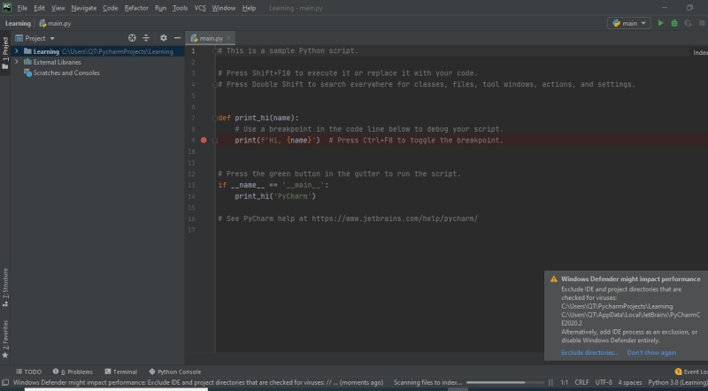

21 PyCharm and Features-25 Aug 2020
PyCharm
- This is most popular IDE for python language.
- This has best of the class features such as:
- Code completion and inspection
- Advanced debugging
- Supports for web programming & Frameworks such as Django, Flask and many more.
- Pycharm has the following flavors
- Community
- Professional (Paid)
- Initially we will be using the Community Edition of PyCharm. Refer Here for download links
-
PyCharm can be installed on Windows, MAC & Linux
-
Download PyCharm Community Edition & install as per installation instructions
- Lets start PyCharm and setup one time settings


- This is Starting Screen of PyCharm

- Lets create a new project using PyCharm



- Create a New python file for implementing a class called as Number and create a simple is_even method
- PyCharm starts hinting you


-
Now add docstring to the Number class
-
KeyMaps


- Finding Shortcuts:

- PyCharm Navigation